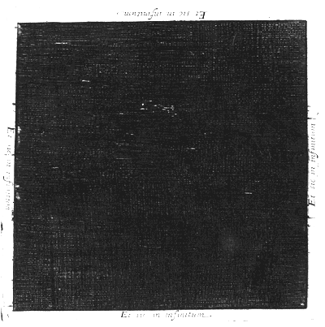

Gold and WTI crude oil perpetuals on Binance USDⓈ-M Futures, live
XAUUSDT, gold perpetual
- Last price, USDT
- —
- 24 hour change
- — (—)
- 24 hour high
- —
- 24 hour low
- —
- 24 hour volume, USDT
- —
- Funding rate
- —
- Next funding in
- —
- Open interest, contracts
- —
- Open interest, USDT
- —
CLUSDT · WTI crude — — — Plate II ↓
Plate I. XAUUSDT, perpetual, 15 min.
Hollow body: close above open. Solid body: close below open. The screened candle is still forming; its screen darkens as its period runs out. Dotted lines: 24 h high and low. Volume in USDT, one stroke per candle.
Plate II. CLUSDT, WTI crude oil, perpetual.

Last price — USDT; 24 hour change — —
- 24h high
- —
- 24h low
- —
- 24h volume, USDT
- —
- Funding, —
- —†
- Next funding in
- —
- Open interest, CL
- —
- Open interest, USDT
- —